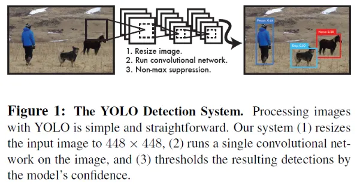

You Only Look Once (YOLO)
一種讓電腦能夠快速地識別出一張圖片中的物體和它們的位置的技術
什麼是 YOLO？
YOLO (You Only Look Once) 是一套著名的一階段 (One-Stage) 即時物件偵測系統。傳統的物件偵測演算法（如 R-CNN 系列）通常需要先找出可能包含物體的候選區域（Region Proposals），再對這些區域進行分類，流程緩慢且耗費運算資源。
YOLO 的核心創新在於「把物件偵測重新定義為迴歸問題」。它只需要單次前向傳播（Forward Pass），就能直接同時預測出整張影像中所有物件的邊界框（Bounding Boxes）與類別機率，這讓它的處理速度達到了驚人的即時性。
核心工作原理
當一張圖片輸入到 YOLO 網路中時，它主要執行以下三個步驟：
1 影像預處理與網格劃分
將輸入圖像統一 Resize 到 448×448 的標準尺寸，並在演算法邏輯上將影像劃分為 S × S 的網格（如 7×7），由物件中心點所在的網格負責偵測該物件。
2 單一卷積網路同時預測
執行單個卷積神經網路（CNN）。僅需這一次前向傳播，網路就會同時輸出每個網格對應的多個邊界框、置信度分數（Confidence Score）以及類別條件機率。
3 閾值過濾與 NMS 後處理
基於模型輸出的信心程度，先依據閾值（Threshold）濾除背景雜訊，再透過非極大值抑制（Non-max suppression, NMS）消除重疊的冗餘邊界框，產出最終精準的偵測結果。

YOLO 演進
以下是 YOLO 歷史上前七代的核心發展歷程：
YOLOv1 (2015)
開創性的第一代。首次將物件偵測轉化為「單一迴歸問題」，捨棄了繁瑣的候選區域提煉，速度極快，直接奠定了一階段物件偵測的框架。
💡 核心突破：End-to-End 單次推論YOLOv2 / 9000 (2016)
引入了 Anchor Box（錨定框）機制並加入 Batch Normalization，大幅改善定位精準度；YOLO9000 版本更能同時識別高達 9000 種物體。
💡 核心突破：Anchor Boxes / 批次正規化YOLOv3 (2018)
原作者經典最終章。採用 Darknet-53 架構，最大的亮點是引入「多尺度預測」（類似特徵金字塔），徹底補齊了過往對於小物件偵測能力不足的致命短板。
💡 核心突破：多尺度預測 (Multi-scale)YOLOv4 (2020)
接棒原作者之作。集結了當時深度學習領域中各式各樣的優化技巧（如 Mosaic 資料增強、Mish 激活函數等），在完全不犧牲速度的情況下，瘋狂疊加準確度。
💡 核心突破：Bag of Freebies / 特徵融合YOLOv5 (2020)
工程部署與生態的重大革新。拋棄了以往底層的 C 語言 Darknet，改用純 PyTorch 開發。其友善的上手難度、完善的部署工具，使其成為業界落地的絕對主力。
💡 核心突破：PyTorch 部署生態 / 自適應錨框YOLOv6 (2022)
針對工業端落地進行的硬體優化版本。特別為邊緣運算裝置、嵌入式硬體重構主幹網路，旨在達成極致的推論速度與高硬體吞吐量。
💡 核心突破：重參數化 (RepVGG) / 工業優化YOLOv7 (2022)
由台灣中研院團隊主導研發。提出了擴展高效層聚合網路（E-ELAN）和基於卷積的重參數化模型，在速度與準確度平衡上創下了帕累托最優（當時世界第一）。
💡 核心突破：E-ELAN 架構 / 模型縮放策略優缺點分析
強大優勢
- 速度極快： 輕量化版本甚至能突破 150 FPS，完美適配即時監控與自動駕駛。
- 全域背景理解： YOLO 在推論時掌握整張圖的脈絡，相比局部方法，較不容易把背景雜訊誤判為物件。
- 通用泛化能力高： 面對非原生訓練集的藝術畫作或卡通風格，依然能維持穩定的表現。
面臨挑戰
- 小物件難以捕捉： 受到網格空間特徵限制，當多個微小物體聚集在同一個鄰近網格時容易發生漏檢。
- 密集幾何重疊： 面對長寬比變化極大、高度重疊或極為密集的物件，部分輕量化模型定位精度稍受限。